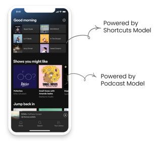
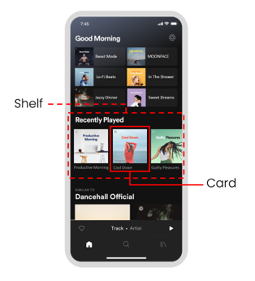

Chapter 3 · Recommendation Systems · Personalization
Recommendation Systems & Personalization: How Spotify Learns What You Love
Spotify doesn't own the music. What it owns is the most detailed picture of your listening habits ever assembled — and a machine learning system that turns that picture into the feeling that the app just gets you.
Company: SpotifyIndustry: Music StreamingCore concept: Recommendation systems & personalization
Spotify was founded in Stockholm, Sweden in 2006 by Daniel Ek and Martin Lorentzon, launching publicly in 2008. The company was born in direct response to rampant music piracy — particularly the peer-to-peer file-sharing platform Pirate Bay — and was built on a simple but powerful premise: make legal music streaming so frictionless, affordable, and enjoyable that piracy becomes less attractive than paying.
Since its launch, Spotify has continuously expanded what it means to be an audio platform. Its move into podcasting brought a new generation of listeners to the medium, and in 2022 it entered the fast-growing audiobook market. Today, listeners can discover, manage, and enjoy over 100 million tracks, 7 million podcast titles, and 500,000 audiobooks in select markets — all in one place.
Spotify went public on the New York Stock Exchange in April 2018 via an unconventional direct listing, and today operates as one of the world’s most valuable media companies. Its business model relies primarily on a freemium structure: a free, ad-supported tier that drives user acquisition, and a premium subscription tier that generates the majority of revenue. The company also generates revenue from podcast advertising and its creator marketplace. With 751 million users and 290 million subscribers across 184 markets, it is the world’s most popular audio streaming service.
In the music space, Spotify competes directly with Apple Music, Amazon Music, YouTube Music, and Tidal — all of which offer access to essentially the same licensed catalog. This matters enormously for understanding Spotify’s strategy: when the product (music) is the same everywhere, the experience of finding and discovering that music becomes the differentiator. That experience is powered almost entirely by machine learning.
Mission
Our mission is to deliver creativity to the world — one note, one voice, one idea at a time. At Spotify, we focus relentlessly on building the best and most valuable experience available anywhere, enhancing every moment by connecting the world to the art and the creatives who shape it.
Strategic context
Spotify does not own the music it streams. It pays licensing fees to record labels and rights holders for every stream. With content costs representing roughly 70% of revenue, Spotify’s path to profitability runs almost entirely through superior personalization — keeping users engaged longer and reducing the churn that erodes subscription revenue.
2 Core Concept: AI as Business Strategy
When Spotify tells you that you listened to a particular artist more than 99% of other listeners, or that your most-played song in a given year was something you didn’t even realize you had on repeat, it does not feel like a technology product. It feels personal. That feeling is not an accident — it is the intended result of a deliberate business strategy built on artificial intelligence.
Spotify operates in one of the most competitive markets in the world. Apple Music, Amazon Music, YouTube Music, and Tidal all offer access to essentially the same catalog of songs. The music itself is not a differentiator. What differentiates Spotify is how well it connects each individual listener to the content they will love — and how consistently it does that, for hundreds of millions of people, every single day.
Key concept
Personalization
Personalization means giving each user a different, tailored experience rather than showing everyone the same “Top 40” chart. Think of it like a knowledgeable music store employee who remembers every album you’ve ever bought and steers you toward something you’ll love — rather than just pointing at the bestsellers rack. In Spotify’s case, the “employee” is software that continuously learns from everything you do on the platform and updates its understanding of your taste over time.
This case examines how Spotify built that personalization capability, what it cost them to get it right, and what the lessons from their experience reveal about AI as a source of sustainable competitive advantage. The framework we will use throughout is the AI Factory model: the idea that the most powerful AI-driven businesses are not companies that simply use AI tools, but companies that have built systems in which data, models, predictions, and decisions continuously reinforce each other to create value.
3 The Business Problem: Scale Kills Curation
Spotify’s catalog contains more than 100 million tracks. A new listener opening the app for the first time faces a choice so large it is effectively no choice at all. Research in consumer behavior consistently shows that when people are presented with too many options, they default to the familiar — they stop exploring, stick to what they know, and eventually disengage. For a streaming platform, disengagement means churn. Churn means lost subscription revenue.
The challenge Spotify faced was not just helping listeners find good music. It was doing so at a scale no human organization could manage. In the early days, Spotify employed editors who built curated playlists and used simple algorithmic rules to surface recently played content. This worked when the platform had tens of millions of users. It did not work when the platform grew to hundreds of millions of users across dozens of languages, cultures, and listening contexts.
Key concept
Recommendation engine (recommender system)
A recommendation engine is a class of machine learning system that predicts which items a user is most likely to engage with, and surfaces those items. Recommendation engines are foundational to nearly every major digital platform: Netflix (what to watch), Amazon (what to buy), TikTok (what to view next), and Spotify (what to listen to). They work by identifying patterns in user behavior — either by analyzing the user directly (content-based filtering) or by finding users with similar tastes (collaborative filtering) — and using those patterns to rank items by predicted relevance.
Human curation is expensive, slow, and subjective. Rules-based algorithms are fast but rigid — they cannot adapt to individual behavior or changing tastes. Spotify needed a third approach: one that could learn from each listener’s behavior, update continuously, and operate at massive scale without a proportional increase in cost. That approach was machine learning.
The shift was from a music company that used technology to a data company that streams music. That distinction matters enormously, because it changes what you invest in, what you measure, and what you consider a competitive asset.
4 Framework: The AI Factory Model
Before walking through what Spotify built, it helps to have a shared vocabulary for how AI-powered businesses actually work. The AI Factory model describes a five-step loop that converts raw data into business value:
Data
→
Model
→
Prediction
→
Decision
→
Value
→
→ back to Data
The key insight of the AI Factory is that these five steps are not a one-time sequence — they are a continuously reinforcing cycle. Every decision the system makes generates new data, which improves the model, which improves the next prediction, which leads to a better decision, which creates more value, which attracts more users, which generates more data. Companies that build this loop well develop a compounding advantage that is very difficult for competitors to replicate.
Key concept
Supervised vs. unsupervised learning
Machine learning models learn in different ways. Supervised learning trains a model on labeled examples (e.g., “this user clicked — label = 1; this user skipped — label = 0”) so it can predict outcomes for new cases. Unsupervised learning finds hidden structure in data without labels — for example, clustering users with similar listening habits into groups. Spotify’s recommendation systems use both: unsupervised clustering to find “taste communities,” and supervised models to predict which specific items a user will engage with next.
5 Step 1 — Data: Every Action Is an Asset
The first step in Spotify’s AI Factory is data collection. Every time a listener interacts with the platform, that interaction is recorded: every stream, every skip, every search, every save, every playlist addition, every time a user turns off shuffle or replays a track.
Key concept
Implicit vs. explicit signals
User data comes in two forms. Explicit signals are direct expressions of preference — a five-star rating, a thumbs up, a written review. Implicit signals are behavioral traces left as a byproduct of normal use: a song skipped after 8 seconds (probably disliked), a track replayed three times in a row (probably loved), or an app opened at 7am on a Tuesday (probably looking for focus music). Implicit signals are far more abundant than explicit ones because they require no extra effort from the user. Spotify’s entire personalization engine runs primarily on implicit signals — making data collection a seamless part of the product experience rather than an interruption to it.
Key concept
Feature engineering
Raw data on its own — “user played a track at 7:12am on Tuesday” — is not something a model can directly learn from. Feature engineering is the process of transforming that raw data into structured, meaningful inputs a model can actually use. For example: “number of times this user played this artist in the past 30 days,” “percentage of songs in this genre this user listened to all the way through,” or “time of day when this user most often opens the app.” Think of it like preparing ingredients before cooking — the raw data is the vegetable, and feature engineering chops and seasons it into something the model can use. The quality of these inputs often matters just as much as the sophistication of the model itself.
Key concept
Features and feature vectors
A feature is a single measurable characteristic about something — one column on a scorecard. For example: “number of times this user played their top artist this month” is one feature. “Percentage of songs skipped this week” is another.
A feature vector is simply a list of numbers that describes one thing — all of a user’s features combined into a single row. In Spotify’s case, each listener gets their own feature vector: “This person has played Arctic Monkeys 14 times this month, skips 62% of songs, finishes 91% of indie rock songs, listens mostly at 7am, and listens for 3.1 minutes on average.” A model can’t read that sentence — so it gets turned into numbers: [ 14, 0.62, 0.91, 7.0, 3.1 ]. That list is the feature vector.
Think of it like a customer profile: if the feature vector is the full profile, each feature is a single field on it. Every user gets their own version of the list — the model compares millions of these lists to find patterns and make predictions.
This is what makes data a strategic moat. A new competitor entering the streaming market might be able to license the same song catalog. They cannot license Spotify’s 751-million-user behavioral dataset.
6 Step 2 — Model: Teaching Machines to Know You
The second step in the AI Factory is building models — the mathematical systems that learn patterns from data and use those patterns to make predictions about future behavior. Spotify’s Home page recommendation system uses a two-stage model architecture. The result of this system is what you see every time you open the app: a series of horizontal rows of content called shelves, each one generated fresh for you by a different specialized model.
Stage 1: Candidate generation
With 100 million tracks in the catalog, evaluating every option for every user every time someone opens the app would be computationally impractical. Candidate generation models solve this by quickly identifying a smaller shortlist of plausibly relevant content. Spotify runs several specialized models at this stage, each powering a different shelf on your Home page:
The Podcast Model — predicts which podcasts a listener is likely to engage with, powering the “Shows You Might Like” shelf.
The Shortcuts Model — predicts which familiar content a listener is most likely to return to, powering shelves like “Recently Played” and “Jump Back In.”
The Playlists Model — designed for newer listeners without a long history, using patterns from similar users to predict relevant editorial playlists.

Figure 1: Spotify's Home page in action. Each shelf on this screen is powered by a different specialized model. The top section (“Good morning”) is the Shortcuts Model — surfacing familiar playlists the listener is likely to return to. The middle shelf (“Shows you might like”) is the Podcast Model — predicting new podcast content based on listening patterns. The bottom shelf (“Jump back in”) is another Shortcuts prediction — resuming recently played content. None of this is curated by a human. Every shelf is generated fresh, for this specific listener, the moment they open the app.

Figure 2: Collaborative filtering made visible. The “Recently Played” shelf (highlighted) shows content the listener has returned to before — powered by the Shortcuts Model. The “Similar to Dancehall Official” shelf below it is collaborative filtering in action: because this listener played Dancehall Official, the system found other users with the same behavior and surfaced what they listened to next. The algorithm never analyzed the music itself — it only looked at the pattern of who listened to what.
Key concept
Collaborative filtering
Collaborative filtering is one of the most widely used techniques in recommendation systems. Rather than analyzing the items themselves, it looks for patterns in who interacts with what. If two users have historically listened to many of the same songs, they are considered “similar” in taste — and content that one enjoyed becomes a candidate recommendation for the other. At Spotify’s scale, with hundreds of millions of users, these patterns become extraordinarily rich. A brand-new listener who plays three songs that millions of other users also played in their first week gives Spotify enough signal to start making useful recommendations almost immediately — because the system can find thousands of existing users who started the same way and trace what they went on to enjoy.
Figure 3: Collaborative filtering in four steps. Each row is a user, each column is a song, and each cell is an engagement score — 0.9 means replayed, 0.5 means played once, 0.1 means skipped, 0 means never heard. User 1’s row (blue) is compared against every other user’s row. Users 3 and 5 (teal) have similar patterns. Heat Waves is circled in green: Users 3 and 5 gave it a 0.9, but User 1 has never heard it — making it a strong recommendation. The algorithm never listened to the songs. It only looked at who listened to what.
To make this work at scale, Spotify’s recommendation system is built in two parallel parts: one side continuously builds a profile of each user based on their listening history, while the other side builds a profile for each piece of content based on who engages with it and when. The system is trained so that a user and the content they are likely to enjoy end up with very similar profiles — making it fast to find good matches even across a catalog of 100 million tracks.
Key concept
Embeddings
An embedding is a compact list of numbers that represents everything the system has learned about a user or a song. Every user gets one based on their listening history. Every song gets one based on who listens to it and when. Each dot in the diagram below is an embedding — its position in space is determined by its list of numbers. Songs with similar numbers land close together. Songs with very different numbers land far apart. This allows the model to discover that a jazz piano solo and a certain ambient electronic track appeal to the same listener — not because they sound alike, but because the same kinds of people listen to both.
Figure 4: Embeddings and clustering in taste space. Each dot is an embedding — a song or user represented as a list of numbers, plotted by position. Songs that attract similar listeners cluster together even if they sound completely different. The green “You” dot sits inside the “late-night chill” cluster — those songs are your recommendations. Crucially, Spotify never told the system which songs belong together. The clusters emerged on their own from the data — that is unsupervised learning in action.
Key concept
Clustering (unsupervised learning in action)
When embeddings are plotted in space, songs that attract similar listeners naturally group together — even if those songs sound completely different. These groups are called clusters. The remarkable thing is that Spotify never told the system which songs belong together. The system discovered those groupings on its own, purely from behavioral patterns. This is unsupervised learning in action: finding hidden structure in data without being given a correct answer. The “late-night chill” cluster in Figure 4 was not labeled by a human — it emerged because the same kinds of people kept listening to those songs at the same times. That is a relationship no human labeling system would have thought to create.
Stage 2: Ranking
Once the candidate set has been generated, a second model ranks those options in the best order for this specific listener at this specific moment. The ranking stage considers contextual signals — time of day, recent listening activity, session length — to determine not just what is relevant, but what is most relevant right now.
Key concept
The explore/exploit tradeoff
A foundational challenge in any recommendation system is balancing exploitation (recommending items the system is confident the user will like, based on past behavior) against exploration (recommending new items the user hasn’t encountered, which may surface new preferences). Pure exploitation leads to a “filter bubble” — users hear only what they already know they like, discovery stops, and engagement plateaus. Pure exploration produces irrelevant recommendations that frustrate users. Spotify’s ranking layer explicitly manages this tradeoff, weighting recommendations toward discovery for users who have shown openness to new content, and toward familiarity in certain moods or contexts.
7 Step 3 — Prediction: Real Time, Every Time
Before predictions can be generated, the options have to be narrowed. This is exactly what the two-stage model architecture in the previous section does: the candidate generation models run first, doing a fast sweep of 100 million tracks and cutting the catalog down to a manageable shortlist. The ranking model then scores that shortlist for this specific listener at this specific moment. Only after both stages have run does the system move to the prediction step — deciding when and how to serve those results to the user.
The third step in the AI Factory is generating those predictions — taking everything the models have learned and producing a specific recommendation for a specific person at a specific moment.
Key concept
Batch inference vs. real-time (online) inference
Once a model is trained, it can generate predictions — called inference — in two modes. Batch inference runs predictions in bulk, offline, on a schedule (e.g., overnight), and caches the results. It is cheaper and simpler to operate. Real-time (online) inference generates predictions on demand, at the moment a user takes an action, using the most current data. Real-time inference is more expensive and technically complex but produces a fresher, more responsive experience. Spotify initially used batch inference and later migrated to real-time inference as user expectations and competitive pressure increased. The key tradeoff is cost vs. relevance freshness.
In Spotify’s early days, predictions were generated in batches overnight and served the next day. This was simple and cheap, but fundamentally limited: if a listener discovered a new artist on Monday night, their Tuesday morning Home page would not yet reflect that discovery. As competition intensified, Spotify moved to real-time prediction — generating recommendations the moment a listener opens the app. The system feels responsive. It feels like it knows you.
8 Things Can Go Wrong
When Spotify moved the Podcast Model from overnight predictions to real-time serving, they ran into a problem that was small in technical terms but significant in business impact. The model had been trained using data processed in a specific way. When it went live, the incoming data was being processed slightly differently — a small discrepancy in how a single variable was being calculated.
Key concept
Training-serving skew (training-serving gap)
A machine learning model learns from historical data — it studies millions of past examples to figure out the patterns that predict good outcomes. Then it gets deployed and starts receiving new, live data from real users. Training-serving skew is what happens when those two sets of data don’t quite match — when the live data has been formatted or calculated slightly differently from the training data. The model applies patterns it learned from one kind of input to a slightly different kind of input, and the predictions quietly get worse. The dangerous part is that nothing breaks. No error message appears. The app keeps working. The recommendations keep showing up. They are just subtly worse than they should be — and that is almost impossible to notice without actively looking for it.
Business risk: silent degradation
At Spotify, the training-serving gap quietly degraded podcast recommendation quality for four months without detection. There was no error message. The app kept working. Podcast recommendations kept appearing. But the recommendations were subtly worse than they should have been — and nobody noticed because slightly worse recommendations look a lot like normal variation in user behavior. A system outage is visible and triggers an immediate response. Silent quality degradation is invisible, and can persist for months before anyone realizes something is wrong.
Spotify’s response was straightforward in principle, even if the execution required significant work. In the short term, they fixed the specific mismatch that caused the problem. In the longer term, they made sure it couldn’t happen again — by ensuring the same process was used to prepare data for both training and live use, and by building automated daily checks that would catch any future divergence early, before it affected users for months.
Key concept
AI governance
Building a working AI model is only half the job. AI governance is everything an organization does to make sure that model keeps working correctly after it has been deployed — the ongoing oversight, not the one-time build. It includes things like: regularly checking that the model’s outputs are still accurate (monitoring), having a process for reverting to a previous version if something goes wrong, setting rules for when a human needs to review the model’s decisions, and keeping records of how the model behaves over time. The Spotify incident is a perfect illustration of why governance matters: the model itself was technically sound, but the absence of monitoring infrastructure allowed a fixable problem to go undetected for four months.
9 Step 4 — Decision: Predictions into Product
The fourth step in the AI Factory is decision-making — using predictions to take a specific action that affects the user experience. At Spotify, this is the Home page itself: predictions generated by the candidate generation and ranking models are translated into shelves — the horizontal rows of content that appear when you open the app. Each shelf has a label (“Recently Played,” “Shows You Might Like,” “Similar to [Artist]”) and is populated entirely by a different specialized model running in the background.
It is worth pausing on the distinction between a prediction and a decision, because conflating them leads to poor AI design.
A prediction answers: what is this user likely to do?
A decision answers: what should we show this user?
A model might predict that a user is very likely to replay the same ten songs they always play — but the decision might be to show them something new anyway, because exploration and discovery are part of Spotify’s value proposition. If the decision layer simply executed every prediction blindly, the product would push users deeper into whatever they already know, rather than helping them grow their tastes.
Business insight
This is the point in the AI Factory where human judgment and business strategy intersect with model output. Spotify’s product and editorial teams make deliberate choices about how predictions are used — how much weight to give novelty versus familiarity, how to balance personalization with exposure to new content, how to ensure smaller artists get surfaced alongside established ones. These are not technical decisions. They are business decisions, and they sit in the decision layer of the AI Factory.
Familiarity vs. discovery: the tension at the heart of Spotify’s strategy
The tension between familiarity and discovery is not a design problem to be solved — it is the core of Spotify’s strategy. Every streaming service can give you what you already know you like. That is not a competitive advantage; it is a baseline. Familiarity keeps you satisfied. Discovery is what keeps you loyal to Spotify specifically.
But discovery only works when it is anchored in familiarity. Surface too much unfamiliar content and the experience feels random and exhausting. Give users only what they already know and the product stagnates. The strategy lives in the balance: enough familiarity to feel safe, enough discovery to feel alive.
This tension runs through every product decision Spotify makes — how Discover Weekly is weighted, how much space emerging artists get on the Home page, how the ranking model balances a sure thing against a calculated risk. And it is not purely a product decision. It is a financial one too. Spotify pays high licensing fees to major labels for well-known content. Emerging and independent artists cost less to serve. Pushing discovery is not just good for users — it improves Spotify’s margins.
Strategic insight
When Spotify’s product teams set the familiarity-discovery dial, they are simultaneously making a brand decision, a user experience decision, and a financial decision. That is strategy — and it is a decision no model can make on its own. The model tells you what users want today. Leadership decides what the product should give them, balancing short-term satisfaction against long-term engagement, loyalty, and margin.
10 Step 5 — Value: Wrapped Is the Proof
The fifth step in the AI Factory is value creation — the business outcome that justifies the investment in the four preceding steps. For Spotify, value is created at multiple levels:
At the individual listener level: discovering an artist you love that you never would have found on your own.
At the platform level: higher engagement, lower churn, and more subscription revenue.
At the creator level: smaller artists reaching audiences they could never have accessed through traditional channels.
Spotify Wrapped makes these outcomes visible. Launched every December, Wrapped is a personalized summary of each listener’s year — their most-played artists, songs, genres, and total minutes listened. In 2023, Wrapped generated over 600 million social media posts in the first few days after launch.
Here is the central insight: Wrapped is not a separate product. It is built on the same behavioral data, collected by the same pipeline, processed by the same infrastructure that powers the Home page every single day. Your top artist on Wrapped is determined by the same listening history that the Shortcuts Model uses to predict what you want to hear next Monday morning.
Strategic insight
The ROI of AI infrastructure investment is often realized far from where the investment was made. Fixing a data pipeline is hard to put in a budget presentation. Generating 600 million social media posts for free is not. The emotional resonance of Wrapped is downstream of engineering decisions made years earlier that most listeners will never know about.
How Spotify actually generated 1.4 billion Wrapped reports
The 2025 Wrapped introduced something new: personalized AI-written narratives describing each listener’s most interesting listening days. Spotify didn’t just pull data and format it — they used a large language model to write a unique story for each of their 1.4 billion users. Making that work reliably at that scale required months of deliberate engineering work around a practice most people don’t associate with infrastructure: prompt engineering.
The team split their prompting strategy into two layers. The system prompt defined the creative contract for every generation — stories had to be data-driven (every insight traceable to actual listening behavior), written in a specific tone (witty, sincere, and quietly playful), and safe by default (no references to drugs, alcohol, sex, or violence). The user prompt supplied the specific context for each listener: their detailed listening logs for the day, a summarized stats block, their overall Wrapped data, the category of interesting day being described, previously generated reports to avoid repetition, and their country for spelling and vocabulary.
Prompting was not a one-time task. It was a continuous loop running for more than three months. The team built a prototype to compare outputs across prompt versions and edge cases, ran LLM-as-a-judge evaluations on sampled outputs, and layered in human review. Creative feedback, technical feedback, and safety feedback all fed into the next iteration.
Business insight
Prompt engineering is not a workaround — it is an engineering discipline. At Spotify’s scale, a single poorly worded prompt produces millions of off-brand or unsafe outputs before anyone catches it. The investment in systematic prompt development, evaluation infrastructure, and human review is what separates a reliable AI product from an unpredictable one. This is AI governance applied to generative AI, not just predictive models.
In Lab 3 you will experience this connection firsthand — the same dataset that powers your recommendation engine will generate your own Wrapped at the end. Go to Lab 3 →
Why Wrapped costs almost nothing to produce: centralized data architecture
Wrapped is cheap to produce because of a fundamental architectural decision Spotify made: centralize all behavioral data in one place. The same pipeline that feeds the recommendation engine also feeds Wrapped, artist analytics dashboards, governance and monitoring systems, and any future product not yet built. This is centralized data architecture — one dataset, many uses. Each new use case costs almost nothing because the infrastructure already exists.
The alternative — decentralized data architecture — is what most organizations end up with by default. Each team or product builds and owns its own data store. The recommendations team has their data, the marketing team has theirs, the artist tools team has theirs. Building something like Wrapped in a decentralized organization would require stitching together three separate data sources — expensive, slow, and error-prone.
Spotify’s decision to centralize is not just a technical choice. It is a strategic one. Every new product or insight draws from the same increasingly rich dataset. The more data flows in, the more valuable every use of it becomes.
Key concept
Centralized vs. decentralized data architecture
Centralized data architecture means all behavioral data flows into one shared pipeline that every team and every product draws from. Decentralized data architecture means each team or product maintains its own separate data store. Centralization is a strategic choice: it costs more to build upfront but makes every future product cheaper, since the infrastructure already exists. Decentralization is often what organizations end up with by default, as teams build what they need independently — but it creates silos that make cross-team products like Wrapped expensive and slow to produce. Spotify’s centralized architecture is a key reason why Wrapped — one of its most powerful marketing tools — costs almost nothing extra to produce each year.
The real-world tradeoffs of centralization
Centralization is a strategic advantage — but it comes with genuine risks that any organization adopting this architecture needs to manage. These are not hypothetical concerns.
Privacy and regulatory exposure. The more data you hold in one place, the larger the regulatory target you become. When Meta centralized user data across Facebook, Instagram, and WhatsApp, it became one of the most powerful personalization systems in the world — and one of the most scrutinized. EU GDPR investigations and FTC scrutiny followed directly from what centralized data makes possible. The better the data, the bigger the exposure.
Security risk. Centralization creates a single point of failure. The 2017 Equifax breach exposed the personal and financial data of 147 million people in a single attack — made catastrophic precisely because the data was centralized. One vulnerability, maximum damage. Distributed data is harder to use, but it is also harder to steal all at once.
Organizational politics. When data is centralized, somebody has to own it — and that means somebody else loses control of it. Sales, marketing, product, and finance all have data they consider theirs. Centralization forces a conversation about who governs access, who decides how the data is used, and who is accountable when something goes wrong. That conversation is rarely just technical. It is political — and it is one of the most common reasons data centralization initiatives stall inside large organizations.
Governance challenge
The same architecture that makes AI powerful also concentrates risk. Privacy exposure, security vulnerability, and internal politics are not reasons to avoid centralization — but they are reasons to govern it carefully. Organizations that centralize data without investing in governance, security, and clear ownership structures often find that the risks outpace the benefits.
Figure 5: Centralized vs. decentralized data architecture. In a decentralized organization (left), each team maintains its own data silo. Building Wrapped requires stitching together data from three separate sources — expensive and slow. In Spotify’s centralized architecture (right), one pipeline feeds everything: the Home page, Wrapped, artist dashboards, governance monitoring, and future products not yet built. Wrapped — one of Spotify’s most powerful marketing tools — costs almost nothing extra to produce.
11 Competitive Advantage: Why This Is Hard to Copy
If Spotify’s approach is this valuable, why has no competitor replicated it? The answer is that the AI Factory model produces a compounding advantage that is very difficult to replicate from a standing start. Consider what a competitor would need:
A behavioral dataset of comparable scale — which requires hundreds of millions of users, which requires a product good enough to attract them, which requires personalization, which requires the dataset. This is a circular dependency that takes years to build.
The organizational capability to build, deploy, and maintain complex ML systems at scale — including the institutional knowledge that comes from having made the mistakes Spotify made and learned from them.
The governance infrastructure — data validation, monitoring, retraining pipelines — that keeps the system performing reliably over time.
None of these can be purchased or shortcut. It is not the model that competitors cannot copy. It is the entire system — the data, the organizational capability, the governance, and the compounding improvement over time.
12 Summary Table & Discussion Questions
AI Factory model: Spotify mapped
Step
Spotify example
Business purpose
Key ML concept
Data
Every stream, skip, search, and save logged in real time
Build a behavioral asset competitors cannot replicate
Implicit signals; feature engineering
Model
Podcast, Shortcuts, and Playlists models trained on behavioral data
Learn individual preferences at scale
Collaborative filtering; embeddings
Prediction
Real-time candidate generation when listener opens app
Deliver relevance at the moment it matters
Online vs. batch inference; training-serving skew
Decision
Home page shelves populated with ranked, personalized content
Balance personalization with discovery and creator equity
Ranking; explore/exploit tradeoff
Value
Engagement, retention, Wrapped virality, artist discovery
Convert AI investment into measurable business outcomes
AI governance; compounding data moat
ML vocabulary introduced in this case
Personalization
Tailoring content to individual users based on behavioral history
Recommendation engine
ML system that predicts and ranks items by user relevance
Implicit signals
Behavioral data (skips, replays) captured without user effort
Feature engineering
Transforming raw data into structured model inputs
Feature & feature vector
A feature is a single measurable characteristic (one column on a user scorecard). A feature vector is the full list of a user’s features as a row of numbers — e.g. [ 14, 0.62, 0.91, 7.0, 3.1 ] — that the model actually reads as input.
Collaborative filtering
Recommending based on what similar users have liked — the "people like you also enjoyed..." logic
Embeddings
A compact list of numbers representing a user or song — similar items end up with similar numbers and cluster close together in space
Clustering
Groups that emerge when similar embeddings are plotted together — discovered by the system without human labels (unsupervised learning)
Supervised learning
Training on labeled examples to predict outcomes
Batch vs. online inference
Scheduled vs. real-time prediction generation
Training-serving skew
Mismatch between training data and production data
ML monitoring
Ongoing checks for data drift and model degradation
AI governance
Processes ensuring AI systems behave as intended post-deployment
Explore/exploit tradeoff
Balancing familiar recommendations vs. new discovery
One shared pipeline feeding all products — makes each new use case cheaper to build
Prompt engineering
The systematic design and iteration of instructions given to a language model to produce reliable, safe, and on-brand outputs at scale
Discussion questions
These questions work equally well as written assignments or in-class discussion prompts. For in-class use, questions 2, 4, and 5 tend to generate the most debate.
Data is the asset, not the algorithm: Apple Music has the same songs and could build the same algorithm. Why can't they replicate Spotify's recommendation system — and what does that tell you about where competitive advantage actually comes from in AI-driven businesses?
AI systems need human judgment: Spotify's model predicts you want to hear the same ten songs on repeat. But Spotify doesn't just show you those songs. Why not — and what does that tell you about the relationship between what AI can predict and what a business should actually do?
AI can fail without breaking: Spotify's podcast recommendations quietly got worse for four months and nobody noticed. What kind of organizational infrastructure would have caught that — and why do most companies not have it?
Building AI is only half the job: The Spotify incident was not a model failure — the model was technically sound. It was a governance failure. What does that tell you about what organizations need to invest in beyond just building the AI system itself?
Data centralization as strategy: Wrapped costs almost nothing to produce because all of Spotify's data flows through one pipeline. Think of a company in any industry — what would it look like to turn their existing data infrastructure into a product or experience their customers would want to share?
The AI Factory compounds: Every decision Spotify's system makes generates new data, which improves the next prediction, which creates more value, which attracts more users, which generates more data. Where does this loop break down — and what would you do to protect it if you were running Spotify?
MIS 432 · AI in Business · Case Study · For classroom discussion purposes.